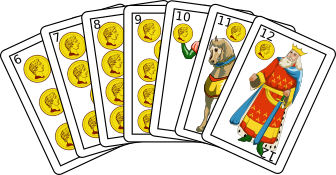
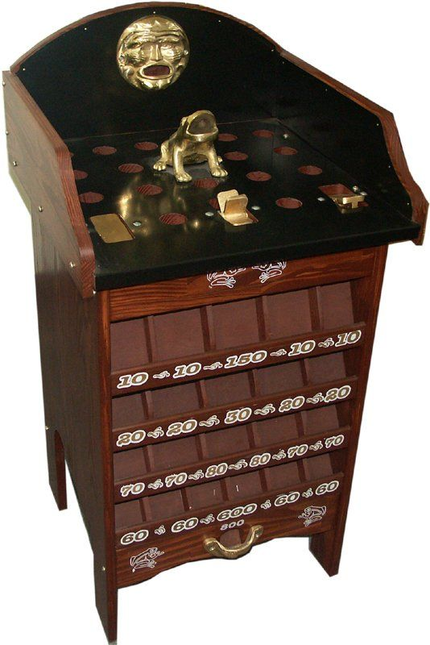
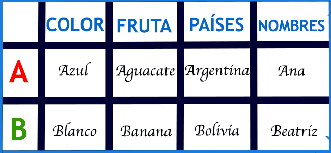

Le but du jeu est de combiner les cartes en main devant les autres joueurs pour les exposer d'un seul coup.
2 à 6 joueurs peuvent jouer.
L'ordre des cartes de la plus haute à la plus basse : roi, chevalier, valet, neuf, huit... jusqu'à l'as qui a la valeur la plus basse.
La valeur de chaque carte est représentée par son indice (sauf le valet qui vaut 8, le chevalier 9 et le roi 10).
Chaque joueur tentera de former une série de cartes égales (par exemple 3,3,3 – 8,8,8) ou de suite (4,5,6,7- 3,4,5 toujours de la même couleur).
Chaque joueur, à son tour, pioche une carte du paquet et en défausse une autre. Vous pouvez tirer à la fois du pont et du puits.
Lorsque le joueur a moins de 10 points en main, il peut « couper ». Les parties de chaque joueur sont affichées et le score est calculé.
Les points de chaque joueur sont additionnés. Le premier joueur à atteindre 100 points perd.
TUTTI-FRUTTI
INSTRUCTIONS
Avant de commencer, les joueurs choisissent des catégories d'intérêt, telles que : les animaux, les noms, les pays, les aliments, les fruits et légumes, les sports, les footballeurs, etc.
Tous les joueurs constituent la liste en respectant l'ordre de la catégorie.
Une fois que tout est prêt, un joueur aléatoire commence à prononcer mentalement l’alphabet auquel un autre joueur, à tout moment, dit « ça suffit ». Le joueur prononce la lettre qu'il avait en tête et commence à remplir les catégories avec des mots commençant par la lettre choisie.
Le premier à terminer toutes les catégories gagne.
Ensuite, les scores sont additionnés. Un mot unique a une valeur de 10, un mot répété une valeur de 5.
Au moins 5 tours sont joués et celui qui obtient le plus de points est le vainqueur.
CASITA ROBADA
INSTRUCTIONS
Autant de tours que nécessaire sont distribués jusqu'à ce que le jeu soit terminé, 3 cartes à chaque joueur et 4 autres sont placées sur la table. Chaque joueur peut piocher des cartes qui sont sur la table et qui portent le même numéro. Si à votre tour de jouer vous n'avez aucune carte à piocher, vous devez en lancer une qui s'ajoute à celles sur la table.
Les cartes volées sont laissées empilées à côté du joueur avec le numéro visible afin que l'adversaire puisse les voir et puissent être volées avec une autre carte portant le même numéro de la « petite maison ».
Lorsque les cartes sont épuisées, celui qui possède la plus grande « maison » gagne.
CULO SUCIO
INSTRUCTIONS
Toutes les cartes sont distribuées entre les joueurs. Le joker représente le sale cul. Les joueurs piochent une carte de leur adversaire qui se trouve à leur gauche. Avec cette carte, ils doivent trouver son numéro égal et la jeter dans le pot. Celui qui garde le joker en main perd.
CHANCHO VA
INSTRUCTIONS
Les jeux de cartes sont choisis en fonction du nombre de joueurs. Un ensemble est égal à 4,4,4,4 – 5,5,5,5. Ensuite, un joueur aléatoire est choisi pour être le leader du jeu. Le meneur guidera le jeu en donnant des instructions telles que « une carte à droite », « deux cartes au milieu », « trois cartes à gauche », etc. Le premier joueur à obtenir quatre cartes identiques (c'est-à-dire un set) doit mettre sa main au milieu du tour et crier chancho. Le dernier joueur à placer sa main au milieu est le perdant. Le premier joueur à marquer 9 points perd.
PAYANA
INSTRUCTIONS
Il se pratique avec 5 pierres sur une table. L’idée est de lancer une pierre en l’air et, pendant qu’elle est en l’air, d’en prendre une autre sur la table. Ensuite, les deux que vous avez en main sont jetés et un troisième est récupéré sur la table, sans que les précédents ne tombent. La première personne à rassembler les cinq pierres dans sa main gagne.
SAPO
INSTRUCTIONS
Toad est un jeu qui consiste à lancer un jeton de fer, en forme de pièce de monnaie, qui doit être inséré dans n'importe quel emplacement de la table. Chaque joueur dispose d'un maximum de 3 à 5 tirs, choisis arbitrairement.
Chaque slot a son score. Le joueur qui marque le plus de points en 3 ou 5 tirs gagne. Normalement, il y a entre 5 et 10 tours, et celui qui obtient le score le plus élevé parmi tous les tours est le vainqueur.

Chinchon
Jeu de cartes typiquement argentin comme le truc

Sapo
Jeu traditionnel argentin

Tutti-Frutti
Jeu largement utilisé à des fins éducatives
Créé par Alejo Tenaglia - Service Civique LEGTA Pau Montardon